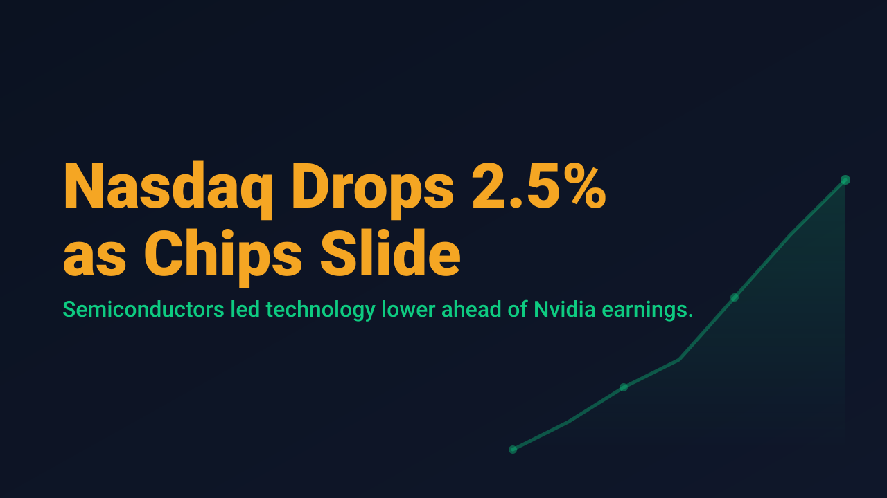
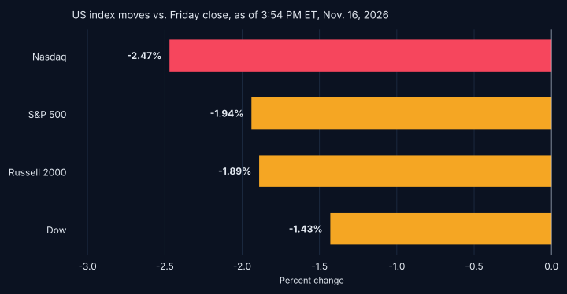

Nasdaq Drops 2.5% as Chips Slide

Wall Street sold off sharply on Monday, November 16, with technology absorbing most of the damage. As of 3:54 PM ET, six minutes before the close, the Nasdaq Composite stood at 24,515.41, down 2.47%, while the S&P 500 was at 7,414.96, down 1.94%, and the Dow Jones Industrial Average was at 51,600.44, down 1.43%. The Russell 2000 lost 1.89%, according to Yahoo Finance. Final closing figures were not available at the time of writing.
Semiconductors led the decline. Yahoo Finance attributed the weakness in chip shares partly to new US restrictions on overseas access to advanced chips. Nvidia fell 4.34% to $155.78 and is down nearly 13% over the past five days. The pressure extended a pattern from Friday, when the Philadelphia Semiconductor Index fell 3.4%, AMD fell 8.8% and Broadcom fell 4.8%, according to Zacks. Nvidia is scheduled to report third-quarter results on Tuesday.
The move also registered in volatility. The VIX was at 23.93, up 23.96% on the day, compared with a Friday close of 19.30. The 10-year Treasury yield was 5.12%, and December crude oil fell 3.41% to $85.54. Friday's October producer price index, which rose 6.5% from a year earlier, remains a backdrop for rate-sensitive growth stocks.

Rotation was visible beneath the index level. At 10:30 AM ET, 247WallSt reported Technology down 3.0% while Consumer Staples gained 1.0%, Utilities 0.7% and Health Care 0.7%. For swing traders, that distinction matters: an index decline concentrated in one industry group is a different setup from broad deterioration, and it affects both position sizing and which sectors offer relative strength.
Traders holding semiconductor exposure into Tuesday face an asymmetric calendar. The sector has already fallen sharply over several sessions, which can mean positioning is lighter, but it also means a disappointing report or guidance could extend losses through levels that were treated as support last week. Conversely, a clean report could trigger a sharp relief move. Neither outcome is knowable in advance, so the practical task is to measure how much risk the position carries into the event rather than to forecast the result.
Concentrated selloffs ahead of a major earnings report often resolve in sharp, two-sided moves. A disciplined approach does not require predicting which way Nvidia's results break; it requires defining risk before the event, respecting the volatility regime, and waiting for confirmation rather than assuming a reversal.